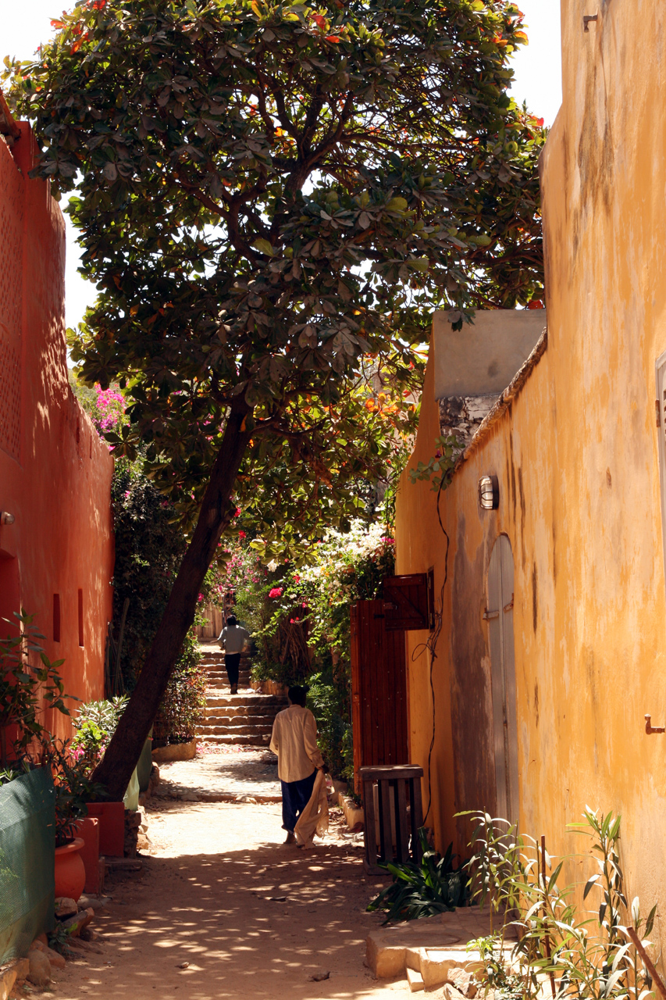
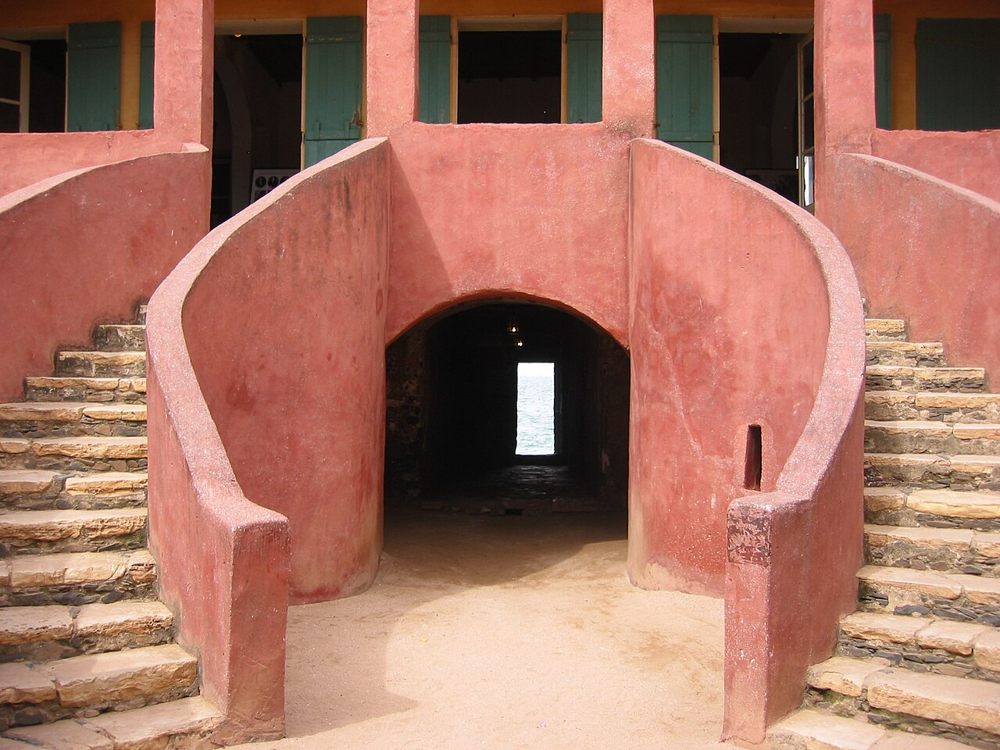
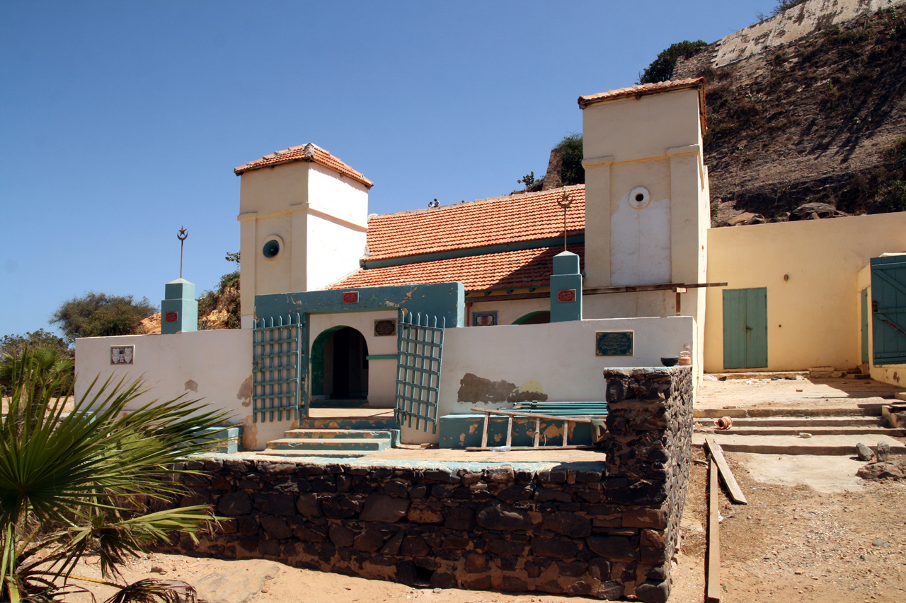
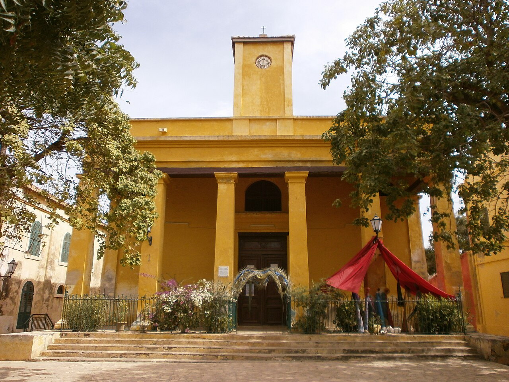

Île de Gorée
Histoire, mémoire et patrimoine mondial.

Rue de Gorée
Admiré la beauté

libération de l'esclavage
Monument en mémoire de l'esclavage, situé à proximité de la Maison des esclave

Maison des esclaves
La maison d'Anna Colas Pépin, dite « Maison des Esclaves ».

La Mosquée de Gorée
La mosquée de Gorée, l'une des plus anciennes mosquées en pierre du Sénégal, a été construite en 1890 au pied du Castel, témoignant de la diversité religieuse et de l'histoire multiculturelle de l'île.

L'église Saint-Charles Borromée.
L'histoire de l'église de Gorée, dédiée à Saint-Charles-Borromée, remonte à sa reconstruction en 1830, financée par les femmes métisses influentes (signares), après que l'ancienne église fut brûlée en 1799 par les Anglais, servant d'édifice religieux important dans ce lieu chargé de mémoire de la traite négrière.